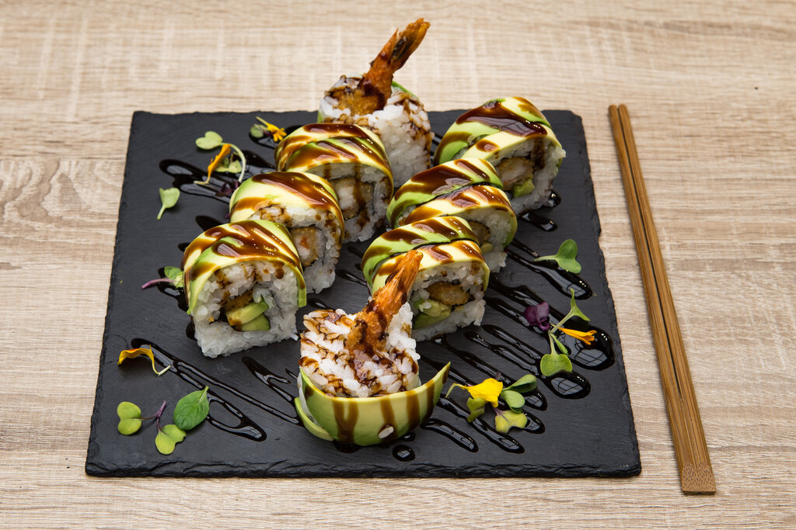

Dragon Rolls

Description
The Dragon Roll is an uramaki sushi roll with avocado slices in top of it, resembling green dragon scales. It's one of the author's favorite plates.
Ingredients
- ¾ cup Japanese sushi-style rice
- ¾ cup water
- 1⅓ table spoon rice vinegar
- 1⅓ table spoon white sugar
- 2¼ table spoon salt
- 8 tempura shrimp, frozen
- 2 sheets nori
- 2 sticks imitation crabmeat, cut into ¼-inch pieces
- 1 cucumber, peeled, seeded, and cut into ¼-inch strips
- 1 avocado, sliced
- 10 oz unagi kabayaki, frozen, thawed and sliced into 2-inch strips
Steps
-
Rinse rice in a strainer until water runs clear.
-
Combine rice and water in a saucepan, then bring to a boil. Reduce heat to low, cover, and cook for about 20 minutes until rice is tender and water is absorbed.
-
Combine rice vinegar, sugar, and salt in a small saucepan over low heat; stir for 1 to 2 minutes until the sugar is dissolved. Pour sushi vinegar over rice, then stir until rice cools and looks dry.
-
Preheat oven to 400 degrees F. Grease a baking sheet with cooking spray.
-
Arrange the shrimp tempura on the baking sheet.
-
Bake in the preheated oven for about 6 minutes per side, until golden and crispy. Cut tails off 4 of the shrimp tempura.
Assembling
-
Cover a bamboo sushi mat with plastic wrap. Lay 1 nori sheet, shiny-side down, on the plastic wrap. Spread 1 cup of rice on top using moistened fingers, leaving a ⅓-inch border. Flip nori so rice is facing the mat.
-
Arrange imitation crabmeat and cucumber along the bottom edge of the nori sheet. Place 2 tail-off shrimp in the center of the nori sheet. Place 2 tail-on shrimp on the end so that the tails extend over the sides of the sheet. Lift the edge of the bamboo rolling mat, and roll up nori into a tight log around the filling.
-
Transfer sushi roll to a serving plate. Layer avocado and unagi slices on top to cover the top and sides of the roll. Slice the roll into 8 pieces using a moistened knife.
-
Repeat with remaining nori, rice, crabmeat, cucumber, avocado, and unagi to make a second roll. If desired, put tobiko on each sushi then drizzle spicy mayo and sprinkle black sesame seeds on top.
-
Serve dragon sushi rolls, and enjoy!
Reference
Dragon Roll recipe
Go back